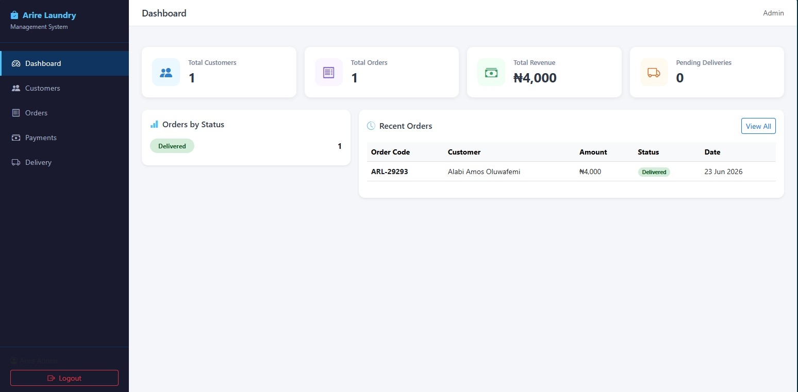
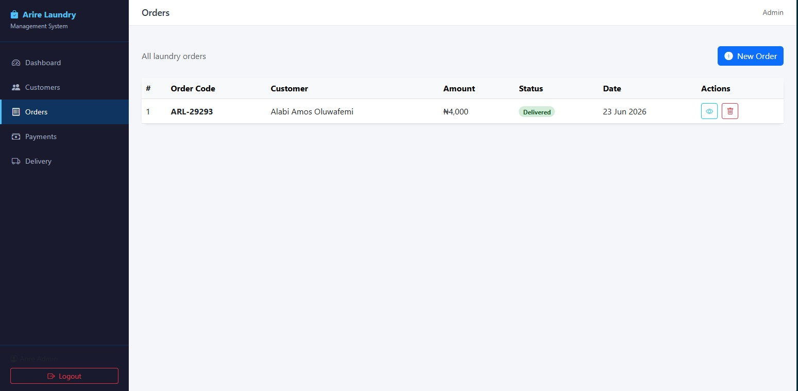
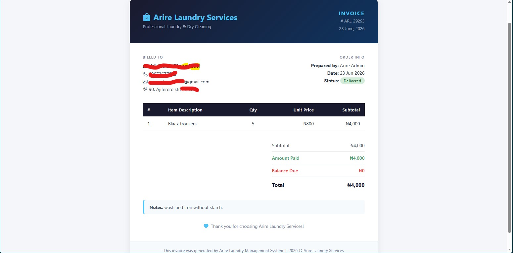
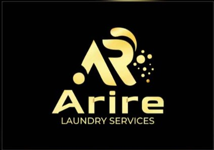

I build internal tools and management systems for real businesses. If you've got a process that needs a proper system, let's talk.
Back to all work// case study
Arire Laundry Services
A complete internal management system built with Flask and MySQL — giving a laundry business full control over customers, orders, staff, payments, invoices, and pickup/delivery tracking from one dashboard.

Main dashboard screenshot// what it does
A full system for a real operation.
Before this system, the laundry business was tracking orders and payments manually. Now everything runs through one internal tool that staff log into daily.
Customer Management
Full customer records — contact details, order history, and status — all in one place.
Order & Job Tracking
Every laundry job is logged with status updates from drop-off through to collection.
Payments & Invoicing
Payment records tied to each order, with invoice generation built in.
Pickup & Delivery Tracking
Staff can log and update pickup and delivery status per customer order in real time.
Staff Login & Auth
Secure login system with Flask-Login — only authorised staff can access the system.
Admin Dashboard
A stats overview so management can see orders, revenue, and delivery status at a glance.
Dashboard — add screenshot

Order tracking — add screenshot
Invoice/payment — add screenshot// how it was built
Under the hood
- Built on a Flask factory pattern with application blueprints — each module (auth, customers, orders, payments, delivery) registered as its own blueprint to keep the codebase clean and scalable.
- Flask-Login handles staff authentication, session management, and route protection — unauthenticated users are redirected to the login page automatically.
- MySQL database via Flask-MySQLdb, with separate tables for customers, orders, jobs, payments, and delivery records — all linked by foreign keys.
- The dashboard blueprint aggregates live stats — total orders, pending deliveries, recent payments — pulled fresh from the database on each load.
- Invoice generation is handled server-side and rendered as a printable HTML view styled separately from the main UI.
- The whole system runs internally — it's a staff tool, not customer-facing, so speed and clarity for the people using it daily was the priority over aesthetics.
Tools used
// from the client
Testimony

Owner
Arire Laundry Services
"This is exactly the kind of digital transformation every modern laundry business needs. Rather than managing customers, orders, payments, staff activities, and delivery records across notebooks, spreadsheets, and multiple applications, this system centralizes everything into one platform.developer didn't just build software; he built an operational backbone for the company. This system positions Arire Laundry Services to operate more professionally, serve customers better, and grow with confidence."
// get in touch